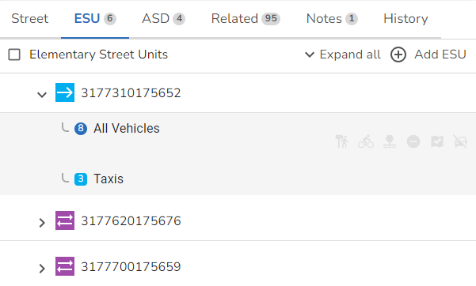

Depending upon the tab you have selected on the Street form the details will be different.
Details associated with the actual Street (Type 11) are displayed on the Street tab of the Street form.
TypeTYPE 1 - Official Designated Street Name is the official name allocated by a street naming authority. TYPE 2 - Street Description is used to identify a street that does not have a designated street name e.g. Path to the side of Guildford Industrial Estate. TYPE 3 - Numbered Street denotes the road or route number such as M25, as allocated by the Department of Transport or local highway authority.) TYPE 4 - Unofficial Street Description is a name by which a street is known locally, but which has not been designated by a street naming authority e.g. "The old by-pass". TYPE 9 - Description used for LLPG access is used to identify streets which take the form of a description of the access feature which is meaningful to a user of the LLPG or NLPG, e.g. ‘River Thames between Tower Bridge and London Bridge’. Rivers, waterways and railways providing the most appropriate access to a BLPU and where generally deemed to be the access most locally referenced or referred to in the construction or identification of an address shall be captured as a Street Reference Type 9 street. Note: These types of street are NOT included in the LSG Export. AuthorityThe local or national authority responsible for naming or numbering a street e.g. the Department of Transport or highway authority. State(England & Wales only) This allows you to select the current state of the street. State start date(England & Wales only) The date at which the street achieved its current state in the real world. Classification(England & Wales only) Select the primary street classification. Note: This is now only used for the LLPG as for NSG, this has been replaced by the Highway Dedication details for an ESU. Surface(England & Wales only) Select the surface finish of the street. Start grid referenceIf you are creating a street and are not assigning an ESU to it, you can use the SELECT START button and then click at the point on the map where you wish the street to start and this will update the coordinates for the start of the street. Easting The Easting or X co-ordinate for the start of the street. Northing The Northing or Y co-ordinate for the start of the street. End Grid ReferenceIf you are creating a street and are not assigning an ESU to it, you can use the SELECT END button and then click at the point on the map where you wish the street to end and this will update the coordinates for the end of the street. Note: If there are more than two ends, the extremity points will be the two ends farthest apart. The co-ordinates are recorded at a resolution of one centimetre. Easting The Easting or X co-ordinate for the end of the street. Northing The Northing or Y co-ordinate for the end of the street. Tolerance(England & Wales only) The radius of influence (in metres) around the extremity points of the street (normally this is 1.5 times the width of the street). The tolerance is a measure of the precision of the defined co-ordinates. Exclude from exportIf you check this box then this street will be excluded from the iManage Export. This would be used if you wish to hold information about a street, say from a neighbouring area, but do not wish to notify the National hub of any changes made to it. Note: Checking this entry will exclude the street from both the NSG and NLPG exports but will NOT stop properties assigned to this USRN from being exported when running the Full or Partial NLPG Export. If you wish to also exclude the properties then you will also need to check the Exclude from Export entry for the property. Start dateThis is the date on which the street started to exist in the real world. End dateThis is the date on which the street ceased to exist in the real world and will only be displayed if the Street is closed. |
All the details associated with the ESUs (Type 13) that have been assigned to the street such as Direction are displayed when you click on the ESU tab of the Street form.  Click on an entry in the list to display the details. ESU IdThis is the unique identifier for the ESU. For England & Wales this is the mid-point British National Grid co-ordinate of the ESU. For Scotland this is the four digit authority code together with an incrementing number. The ESU Id is automatically generated. Direction(England & Wales only) This indicates whether traffic flow is restricted in a particular direction. Tolerance(England & Wales only) This is the tolerance of all coordinate points and is defined in metres. Start DateThis is the date which the section of the street represented by the ESU was created in the real world or planned to start. End DateThis is the date at which the ESU ceased to exist in the real world or the date that the ESU record was Closed. State & State Date(Scotland only) This allows you to select the current state of the ESU together with the date upon which the ESU reached this State. All ESUs must have a State. It is used to identify individual segments of a street which have differing states. This is particularly common during the development of “multi plot” housing sites, where a street may have been through the street naming & numbering process and so be in the street gazetteer, to meet the needs of the property gazetteer, but some sections are open to vehicles, whilst others may be under construction or construction might not even have started. It is of particular importance to some users of the gazetteer, such as the Emergency Services. Classification & Classification Date(Scotland only) Select the primary classification for the ESU together with the date upon which the ESU was classified. The classification of an ESU is significant and so, if more than one applies, then the highest placed in the list below should be entered: •Motorway •Special road •Open to vehicles •Cycle track •Pedestrian way or footpath
|

(England & Wales only) All the details associated with the Associated Street Data (ASD) for a street are displayed when you click on the ASD tab of the Street form. Note: You can click Expand all to show all of the records or just click on a type to expand that particular type of ASD.
Associated Street Data details are split into five categories:
|

The Street Note details show all of the Notes for a particular Street and are displayed on the Notes tab of the Street form. Click on an entry in the list to display the details. NoteThe details of the Note which can be up to 100 characters. |
(Scotland only) All the details associated with the Associated Data (AD) for a street are displayed when you click on the ASD tab of the Street form. Note: You can click Expand all to show all of the records or just click on a type to expand that particular type of Associated Data.
|
(Scotland only) The street successor cross reference (Type 30) provides for historical links between streets in the event of splits and merges. This information is displayed when you click on the Successors tab of the Street form. Click on an entry in the list to display the details. Note: Multiple successor cross reference records can be held for a single street, e.g. where a street has been split into multiple new streets. SuccessorThis is the USRN for the previous street. Start DateThe date on which this Successor record was created. End DateThe date on which this Successor record ceased to exist. |